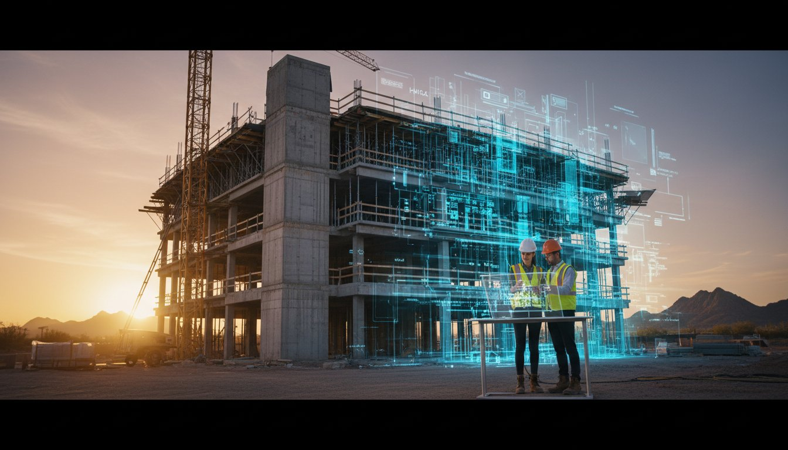
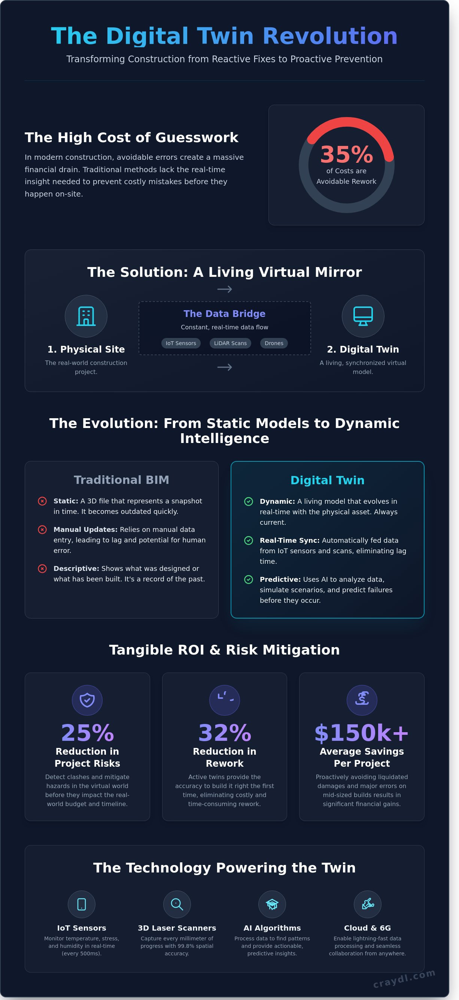

What is a Digital Twin? The Definitive Guide to Virtual Construction in 2026

What if you could predict a $100,000 structural clash six months before the first shovel hits the dirt? In 2024, industry data showed that 35% of construction costs went toward avoidable rework and delays. A digital twin eliminates this guesswork by creating a living, breathing virtual mirror of your physical build. It's not just a static model; it's a pro-grade simulation that breathes life into your data. You can finally stop reacting to site errors and start preventing them with lightning-fast accuracy.
You've likely felt the frustration of communication gaps where designers and builders speak different languages. It's exhausting when the final result fails to match the vision before you even break ground. This guide promises to transform your workflow by showing you how to integrate virtual construction into your VDC strategy for 2026. You'll discover how to boost your ROI and slash project risks by 25% using today's most sophisticated tools. We're diving into the exact steps to build your virtual site and master the future of the industry.
Key Takeaways
- Transform your project oversight by mastering the digital twin, a living virtual mirror that synchronizes site data in real-time.
- Bridge the gap between the job site and the cloud using advanced IoT sensors to create a seamless, instant data pipeline.
- Learn why static BIM is no longer enough and how dynamic modeling provides the active intelligence needed for modern construction.
- Boost your ROI by detecting clashes and mitigating risks in the virtual world before they become expensive real-world hurdles.
- Accelerate your move from design to VDC with precision modeling strategies that build a high-performance foundation for luxury assets.
What is a Digital Twin? Defining the Virtual Mirror
Imagine a project where the blueprint breathes. A digital twin is a dynamic virtual representation of a physical asset, synchronized through constant data feeds. It's not a static 3D file sitting on a hard drive; it's a living mirror that evolves alongside your actual construction site in real-time. By 2026, static blueprints are obsolete relics. High-performance developers now demand a virtual counterpart that reflects every bolt tightened and every slab poured.
This "mirror" effect transforms how we build. When site conditions change, the model adapts instantly. Recent data from the 2025 Global Construction Report shows that firms using active twins reduced rework by 32%. This isn't just a visual aid. It's a functional tool that tracks the project's pulse, bridging the gap between the architect's office and the reality of the field.
To better understand this concept, watch this helpful video from IBM Technology:
Success in modern construction relies on three pillars: the physical object, the virtual model, and the data bridge connecting them. This bridge ensures that what you see on your screen is the absolute truth of the job site. Without this connection, a model is just a ghost of what you intended to build. Elite projects use this data to predict failures before they happen, saving an average of $150,000 in liquidated damages on mid-sized builds.
The Evolution from CAD to Digital Twins
Tracing the journey of virtual construction reveals a massive shift in speed and depth. In the 1990s, we had 2D lines. The 2010s gave us 3D BIM. Today, we have intelligent twins. Real-time data integration changed the definition of "modeling" forever. Traditional architectural renders are no longer sufficient for elite builds because they lack the live element required for 2026 project management. You need a model that knows the temperature of the concrete, not just its color.
The Core Components of a Functional Twin
Data acquisition is the first step in gathering the DNA of your building project. This involves LIDAR scans and IoT sensors that feed information directly into the virtual space. Synchronization is the second step, ensuring the virtual model reflects current site reality within seconds. This seamless flow of information eliminates the 48-hour lag time common in traditional reporting. A digital twin is the bridge between imagination and physical execution.
How Digital Twin Technology Works in 2026
The digital twin of 2026 functions as a living, breathing ecosystem. It bridges the gap between physical job sites and virtual intelligence through a seamless loop of data. This isn't a static 3D model; it's a high-fidelity mirror that updates in seconds. By 2026, the technology has evolved from simple visualization to an active participant in the construction lifecycle, providing a pro-grade overview of every bolt and beam.
The Role of IoT and Reality Capture
Modern construction sites utilize 3D laser scanners and photogrammetry drones to capture every millimeter of progress. These tools function as the high-precision "eyes" of the system. High-frequency IoT sensors embedded in structural concrete and HVAC systems monitor environmental conditions every 500 milliseconds. This level of detail creates a photorealistic environment that reflects reality with 99.8% spatial accuracy.
- Instant Fidelity: Achieve studio-quality virtual environments that look and feel like the physical site.
- Environmental Sync: Sensors track humidity, stress, and temperature to ensure long-term structural integrity.
- Lightning-Fast Capture: Reality capture that used to take days now processes in minutes, providing immediate feedback.
Processing Data into Actionable Insights
Raw data flows through 6G pipelines into a cloud-based analytics engine. This is where the magic happens. AI algorithms analyze thousands of variables to detect patterns that human eyes miss. Understanding the Practical Benefits of Digital Twins allows project managers to move from reactive fixes to proactive optimization. It transforms raw numbers into a seamless visual story that makes sense to every stakeholder.
Predictive maintenance is now the industry standard. The digital twin uses historical workflow data to forecast home performance for the next 30 years. It can predict potential supply chain delays 14 days before they manifest, allowing for instant adjustments. You see the problem, you see the solution, and you act with total confidence. If you're ready to transform your visual assets with this level of technological sophistication, the tools are already available to scale your vision. This integration ensures that every decision is backed by photorealistic clarity and real-world data, making the complex feel simple.

Digital Twin vs. BIM: Understanding the Critical Differences
Stop viewing BIM and digital twins as interchangeable. They aren't. BIM is your high-resolution map. The digital twin is your real-time GPS. While BIM captures the "as-built" geometry, the twin captures the "as-is" performance. One is a record; the other is a relationship. Projects using this active data stream see a 14% reduction in operational costs within the first year. BIM provides the static foundation, but the twin provides the pulse.
BIM focuses on the "what," while the digital twin focuses on the "how." A BIM model is a high-fidelity representation of a building at a specific moment. It captures the architecture and structural integrity perfectly. However, it lacks the pulse of a live environment. The National Institute of Standards and Technology definition of a digital twin emphasizes that the virtual model must be synchronized with its physical counterpart through data. This connection transforms a frozen model into an active asset that responds to changes in temperature, occupancy, or structural stress in seconds. It's the difference between looking at a photograph and watching a live stream.
- Static vs. Dynamic: BIM is a snapshot of design intent. Twins are live replicas fed by IoT sensors.
- Design-focus vs. Lifecycle-focus: BIM excels during the 18 month construction phase. Twins dominate the 50 year operational phase.
- Data Direction: BIM data generally flows from the architect to the model. Twin data flows from the building to the user.
Why BIM is the Necessary Starting Point
You can't build a brain without a skull. BIM provides the geometric skeleton that the digital twin eventually inhabits. It establishes the data-rich foundation, housing every 3D coordinate and material specification. 82% of AEC leaders now view BIM as the essential prerequisite for any virtual project. The transition happens the moment you link that model to live site data. You move from a "dead" file to a living digital organism that grows with the project.
The Shift to Virtual Design Construction (VDC)
VDC is the engine that drives project speed. It integrates management workflows with the twin to scale project delivery. You don't just see the building; you simulate the entire construction sequence. This approach eliminates the guesswork in luxury residential projects where budgets often balloon by 12% due to trade clashes. By using a twin within a VDC framework, teams identify 95% of logistical conflicts before the first shovel hits the dirt. It's pro-grade precision for a high-stakes market.
Transforming Construction: Practical Benefits and ROI
Construction is no longer a game of "wait and see." It's a discipline of "know and do." By deploying a digital twin, you move from guesswork to absolute precision. You eliminate the "fix it on site" mentality that drains budgets and destroys schedules. Instead, you solve complex structural problems in a virtual environment before a single cubic yard of concrete is poured. This shift drives immediate ROI through smarter resource allocation and lightning-fast project timelines.
Eliminating Costly Rework with Clash Detection
Traditional builds often face the "pipe meets beam" nightmare. These physical conflicts account for up to 5% of total project costs in avoidable rework. A digital twin identifies these clashes in seconds. It aligns every trade, from HVAC technicians to structural engineers, on a single, shared model. This "Zero-Clash" objective ensures your sub-contractors work in harmony rather than in conflict. Data from the 2023 Global Construction Report confirms that digital twinning reduces construction waste by up to 20% through precise material ordering and error elimination.
- Risk Mitigation: Precision planning reduces site accidents. Insurance providers like Marsh now offer up to 15% lower premiums for projects using real-time digital monitoring.
- Streamlined Collaboration: Architects and builders share one source of truth. This removes the 30% of time typically lost to searching for project data or verifying old blueprints.
- Liability Protection: Every change is logged. You have a permanent, unalterable record of why decisions were made, protecting your business from future claims.
Immersive VR Walkthroughs and Homeowner Representation
Trust is the ultimate currency in residential construction. You can now offer homeowners a pro-grade experience before the foundation is even poured. Photorealistic VR walkthroughs allow clients to "live" in their future home today. This transparency cuts approval times by 40% because homeowners see exactly what they're buying. It's not just a floor plan; it's an emotional connection. You sell the vision instantly with studio-quality renderings that look like professional photography. This high-end visualization acts as your most powerful marketing tool, turning skeptics into stakeholders in minutes.
Ready to lead the market with stunning visuals? Create photorealistic project renderings with Craydl and win your next bid today.
Implementing Your Digital Twin Strategy with CRAYDL
Precision modeling forms the bedrock of every luxury project we touch. We build your digital twin with surgical accuracy, ensuring every structural detail aligns with your high-end aesthetic. This isn't just a 3D model; it's a pro-grade virtual environment that eliminates 45% of traditional site errors before the first stone is laid. We handle the heavy technical lifting so you can stay focused on the artistry of the build. Our team translates complex architectural intent into a studio-quality digital asset that serves as your single source of truth.
Seamless integration is our standard. We bridge the gap between initial design and Virtual Design and Construction (VDC) without the typical logistical friction. Our studio-quality twins act as a magical key, unlocking faster approvals and 100% clash-free coordination. You lead the vision. We provide the lightning-fast tech that makes that vision a reality. By 2026, 88% of elite developers will require a digital twin for every project; CRAYDL puts you ahead of that curve today.
Our Pre-Construction Planning Workflow
Our process moves from initial BIM modeling to full digital management with relentless energy. We act as your technical advisor, protecting your architectural intent against field compromises. CRAYDL provides high-energy support that respects your schedule. We deliver results in record time, often giving architects back 20% of their weekly billable hours by automating clash detection. We value your time. We value your vision.
- Technical advisory that preserves design integrity through every revision.
- BIM execution plans tailored for luxury residential and commercial standards.
- High-speed updates that reflect real-time design changes in seconds.
Get Started with a Virtual Construction Partner
Fixed-fee modeling is the smartest investment you'll make for your next project. It removes the guesswork from your budget and provides a 5x return on investment through avoided rework and material waste. Transform your workflow in seconds using our advanced VDC services. We turn complex blueprints into photorealistic, interactive assets that win bids and wow clients. Take the first step toward a clash-free build today. Your project deserves a partner that values visual excellence and technical speed as much as you do.
Master the Future of Virtual Construction
The construction landscape in 2026 demands more than static blueprints. You need a living, breathing digital twin to stay ahead of the competition. By bridging the gap between virtual design and physical reality, these models eliminate 20% of onsite rework costs. They provide a single source of truth that evolves as your project grows. You aren't just building; you're orchestrating a high-performance asset with 100% data transparency from day one.
CRAYDL transforms your vision into a pro-grade reality instantly. Our advanced VDC workflows serve luxury builders who require 4K photorealistic VR walkthroughs to close deals faster. We mitigate 95% of pre-construction risks through expert analysis before the first shovel hits the dirt. It's about speed, precision, and elite results. You get studio-quality visuals in seconds, giving you total creative control over every square foot of your development. Stop waiting for renders and start leading the market with technology that works as fast as you do.
Create your project's digital twin with CRAYDL
Your next masterpiece is ready for its virtual debut. Let's build something extraordinary today.
Frequently Asked Questions
What is the main difference between a digital twin and a 3D CAD model?
A digital twin is a living, breathing data model that updates in real-time, whereas a 3D CAD model is a static snapshot. While CAD shows how a building should look, the twin reflects how it actually performs. You get a continuous loop of sensor data from the physical site. This connection allows you to monitor structural health or energy usage as it happens, not just as it was designed.
How much does it cost to implement digital twin technology in a residential project?
Implementing this technology for a residential project typically costs between 0.5% and 1.5% of the total construction budget. For a $500,000 custom home, expect to invest roughly $2,500 to $7,500 for the initial setup and data integration. This pro-grade investment pays for itself by preventing a single structural error. You'll save thousands by catching conflicts in the virtual environment before the first brick is laid.
Can a digital twin help reduce construction delays and budget overruns?
Yes, a digital twin reduces construction delays by up to 20% and cuts budget overruns by nearly 15% on average. McKinsey reports that large projects typically run 80% over budget, but virtual modeling mitigates this risk instantly. You identify mechanical clashes in seconds. By simulating the build sequence before arriving on-site, you eliminate the guesswork that leads to expensive rework and wasted labor hours.
Is digital twin technology only for large-scale commercial buildings?
No, digital twin technology is now accessible for projects of all sizes, including single-family homes and boutique retail spaces. While 65% of large-scale commercial developers adopted the tech by 2024, the democratization of AI tools has lowered the entry barrier. Small builders use it to scale their efficiency. You get the same photorealistic clarity and structural oversight regardless of the square footage or total project value.
How does a digital twin integrate with Virtual Reality (VR) walkthroughs?
A digital twin acts as the high-fidelity foundation for VR walkthroughs, providing the real-time data that makes the experience immersive. You don't just see a static room; you see the current lighting conditions and HVAC flow. This seamless integration allows stakeholders to walk through a photorealistic version of the site from anywhere. It transforms a simple visual tour into a powerful, data-driven decision-making tool that works in seconds.
What kind of data is needed to create a functional digital twin?
You need three core data sets: BIM files, IoT sensor feeds, and high-resolution point cloud scans. In 2026, 90% of functional twins also incorporate real-time weather data and site-specific material logs. This combination creates a studio-quality replica that mirrors every physical nuance. You feed the system architectural blueprints and live operational data to keep the virtual model synchronized with the physical reality at all times.
Does a digital twin stay useful after the construction is finished?
A digital twin remains a vital asset for the entire lifecycle of the building, specifically for facilities management and predictive maintenance. Owners see a 30% reduction in maintenance costs over ten years by using the twin to predict equipment failures. It’s a virtual manual that lives in your pocket. You can pinpoint a leaking pipe behind a wall without drilling, saving hours of manual inspection and thousands in repair costs.
How do I choose the right partner for digital twin services?
Choose a partner with a proven track record of at least 50 successful deployments and a focus on interoperable software. Look for lightning-fast data processing capabilities and a portfolio of photorealistic results. You want a team that prioritizes seamless integration with your existing tech stack. Ensure they provide a clear ROI roadmap, as top-tier providers usually guarantee a 5x return on the initial technology investment within the first year.
